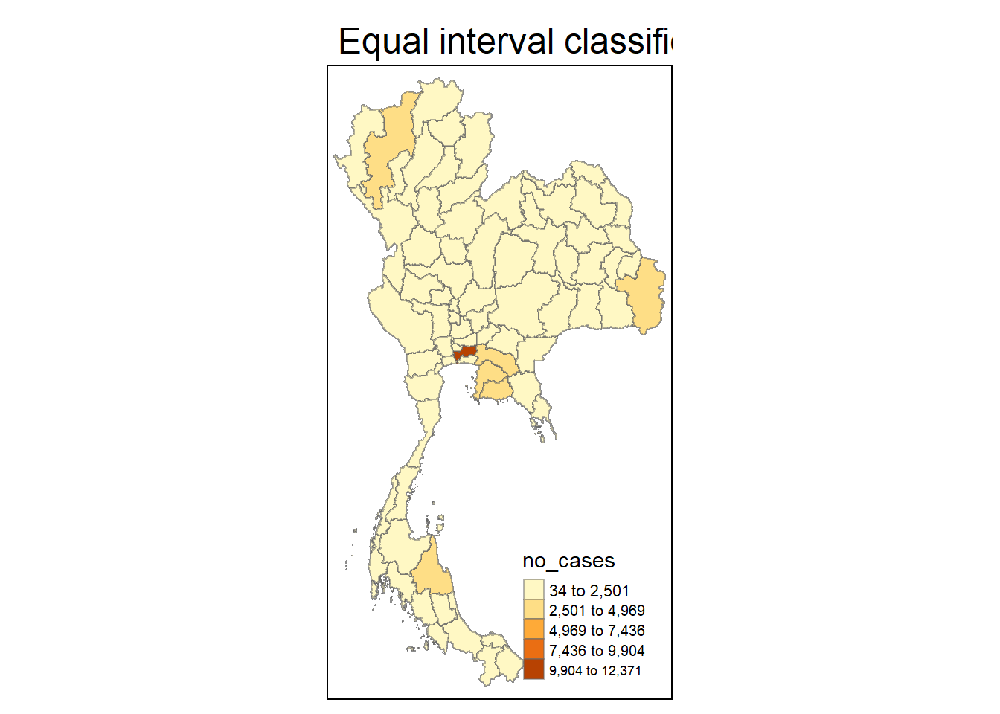
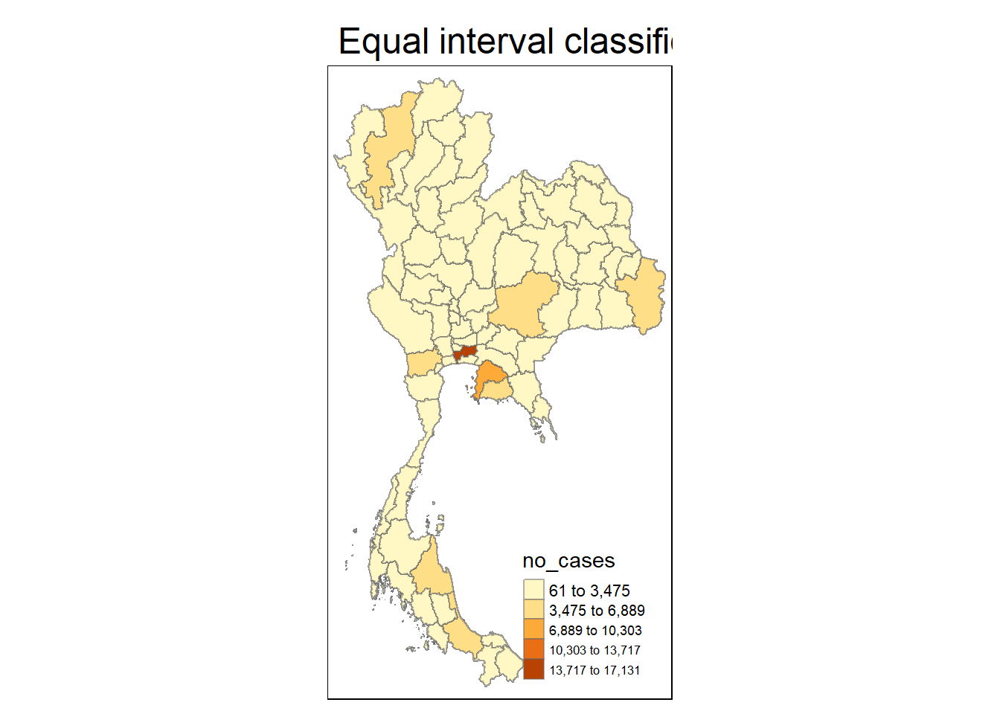
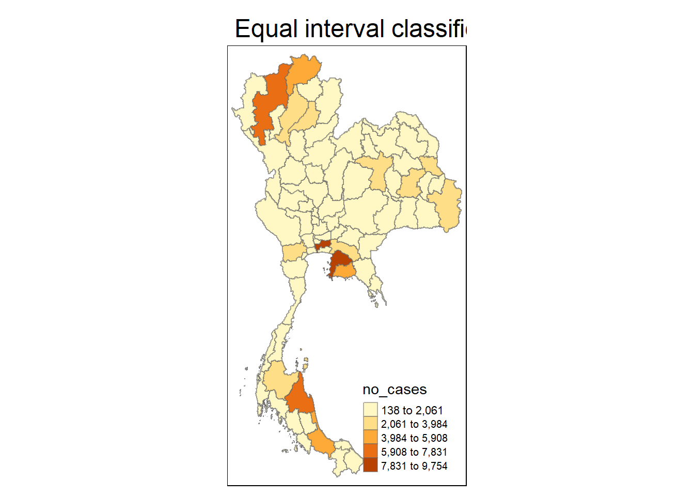
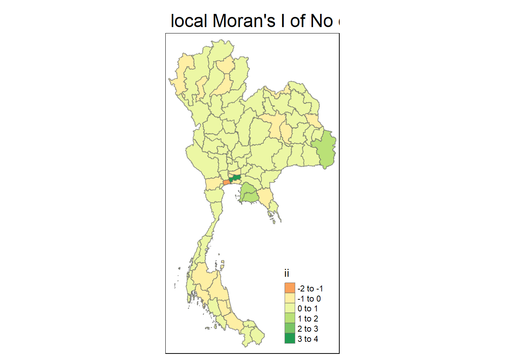

pacman::p_load(sf, sfdep, tmap, tidyverse)Take-home Exercise 02
Take-home Exercise 2: Application of Geospatial Analysis Methods to Discover Thailand Drug Abuse at the Province Level
Background
Drug abuse is associated with significant negative health, financial and social consequences. Yet, illicit drug consumption remains highly prevalent and continues to be a growing problem worldwide. In 2021, 1 in 17 people aged 15–64 in the world had used a drug in the past 12 months. Notwithstanding population growth, the estimated number of drug users grew from 240 million in 2011 to 296 million in 2021.
The geopolitics of Thailand which is near the Golden Triangle of Indochina, the largest drug production site in Asia, and the constant transportation infrastructure development made Thailand became market and transit routes for drug trafficking to the third countries.
In Thailand, drug abuse is one of the major social issue. There are about 2.7 million youths using drugs in Thailand. Among youths aged between 15 and 19 years, there are about 300,000 who have needs for drug treatment. Most of Thai youths involved with drugs are vocational-school students, which nearly doubles in number compared to secondary-school students.
Objectives
As a curious geospatial analytics green horn, you are interested to discover:
if the key indicators of drug abuse of Thailand are independent from space.
If the indicators of drug abuse is indeed spatial dependent, then, you would like to detect where are the clusters and outliers, and the hotspots.
Last but not least, you are also interested to investigate how the observation above evolve over time.
The Task
The specific tasks of this take-home exercise are as follows:
Using appropriate function of sf and tidyverse, preparing the following geospatial data layer:
a study area layer in sf polygon features. It must be at province level (including Bangkok) of Thailand.
a drug abuse indicators layer within the study area in sf polygon features.
Using the extracted data, perform global spatial autocorrelation analysis by using sfdep methods.
Using the extracted data, perform local spatial autocorrelation analysis by using sfdep methods.
Describe the spatial patterns revealed by the analysis above.
The Data
For the purpose of this take-home exercise, two data sets shall be used, they are:
Thailand Drug Offenses [2017-2022] at Kaggle.
Thailand - Subnational Administrative Boundaries at HDX. You are required to use the province boundary data set.
Importing Package
Geospatial data
thai <- st_read(dsn = "data/raw/Thailand_shp",
layer = "tha_admbnda_adm1_rtsd_20220121")Reading layer `tha_admbnda_adm1_rtsd_20220121' from data source
`C:\ryanpxp\IS415-GAA\Take-home_Ex\Take-home_Ex02\data\raw\Thailand_shp'
using driver `ESRI Shapefile'
Simple feature collection with 77 features and 16 fields
Geometry type: MULTIPOLYGON
Dimension: XY
Bounding box: xmin: 97.34336 ymin: 5.613038 xmax: 105.637 ymax: 20.46507
Geodetic CRS: WGS 84Study area

tm_shape(thai) +
tm_fill("ADM1_EN",
title = "Study Area: Thailand Provinces",
palette = "inferno") +
tm_borders() +
tm_layout(legend.show = FALSE)Warning: Number of levels of the variable "ADM1_EN" is 77, which is larger than
max.categories (which is 30), so levels are combined. Set
tmap_options(max.categories = 77) in the layer function to show all levels.
checks for holes
u_thai <- st_union(thai)
plot(u_thai)
Aspatial Data
drugs <- read_csv("data/raw/thai_drug_offenses_2017_2022.csv")Rows: 7392 Columns: 5
── Column specification ────────────────────────────────────────────────────────
Delimiter: ","
chr (3): types_of_drug_offenses, province_th, province_en
dbl (2): fiscal_year, no_cases
ℹ Use `spec()` to retrieve the full column specification for this data.
ℹ Specify the column types or set `show_col_types = FALSE` to quiet this message.Mismatched Province
By checking on the naming of the province from both the geospatial and aspatial data, we can see that some of the namings are mismatched. This would cause problems when handling the data.
comparison_df <- data.frame(
Geospatial = sort(unique(thai$ADM1_EN)),
Aspatial = sort(unique(drugs$province_en))
)
print(comparison_df) Geospatial Aspatial
1 Amnat Charoen Amnat Charoen
2 Ang Thong Ang Thong
3 Bangkok Bangkok
4 Bueng Kan buogkan
5 Buri Ram Buri Ram
6 Chachoengsao Chachoengsao
7 Chai Nat Chai Nat
8 Chaiyaphum Chaiyaphum
9 Chanthaburi Chanthaburi
10 Chiang Mai Chiang Mai
11 Chiang Rai Chiang Rai
12 Chon Buri Chon Buri
13 Chumphon Chumphon
14 Kalasin Kalasin
15 Kamphaeng Phet Kamphaeng Phet
16 Kanchanaburi Kanchanaburi
17 Khon Kaen Khon Kaen
18 Krabi Krabi
19 Lampang Lampang
20 Lamphun Lamphun
21 Loei Loburi
22 Lop Buri Loei
23 Mae Hong Son Mae Hong Son
24 Maha Sarakham Maha Sarakham
25 Mukdahan Mukdahan
26 Nakhon Nayok Nakhon Nayok
27 Nakhon Pathom Nakhon Pathom
28 Nakhon Phanom Nakhon Phanom
29 Nakhon Ratchasima Nakhon Ratchasima
30 Nakhon Sawan Nakhon Sawan
31 Nakhon Si Thammarat Nakhon Si Thammarat
32 Nan Nan
33 Narathiwat Narathiwat
34 Nong Bua Lam Phu Nong Bua Lam Phu
35 Nong Khai Nong Khai
36 Nonthaburi Nonthaburi
37 Pathum Thani Pathum Thani
38 Pattani Pattani
39 Phangnga Phangnga
40 Phatthalung Phatthalung
41 Phayao Phayao
42 Phetchabun Phetchabun
43 Phetchaburi Phetchaburi
44 Phichit Phichit
45 Phitsanulok Phitsanulok
46 Phra Nakhon Si Ayutthaya Phra Nakhon Si Ayutthaya
47 Phrae Phrae
48 Phuket Phuket
49 Prachin Buri Prachin Buri
50 Prachuap Khiri Khan Prachuap Khiri Khan
51 Ranong Ranong
52 Ratchaburi Ratchaburi
53 Rayong Rayong
54 Roi Et Roi Et
55 Sa Kaeo Sa Kaeo
56 Sakon Nakhon Sakon Nakhon
57 Samut Prakan Samut Prakan
58 Samut Sakhon Samut Sakhon
59 Samut Songkhram Samut Songkhram
60 Saraburi Saraburi
61 Satun Satun
62 Si Sa Ket Si Sa Ket
63 Sing Buri Sing Buri
64 Songkhla Songkhla
65 Sukhothai Sukhothai
66 Suphan Buri Suphan Buri
67 Surat Thani Surat Thani
68 Surin Surin
69 Tak Tak
70 Trang Trang
71 Trat Trat
72 Ubon Ratchathani Ubon Ratchathani
73 Udon Thani Udon Thani
74 Uthai Thani Uthai Thani
75 Uttaradit Uttaradit
76 Yala Yala
77 Yasothon YasothonThe identified mismatches are:
| Geospatial | Aspatial |
|---|---|
| Bueng Kan | buogkan |
| Lop Buri | Loburi |
drugs <- drugs %>%
mutate(province_en = recode(province_en,
"buogkan" = "Bueng Kan",
"Loburi" = "Lop Buri"))
print(sort(unique(drugs$province_en))) [1] "Amnat Charoen" "Ang Thong"
[3] "Bangkok" "Bueng Kan"
[5] "Buri Ram" "Chachoengsao"
[7] "Chai Nat" "Chaiyaphum"
[9] "Chanthaburi" "Chiang Mai"
[11] "Chiang Rai" "Chon Buri"
[13] "Chumphon" "Kalasin"
[15] "Kamphaeng Phet" "Kanchanaburi"
[17] "Khon Kaen" "Krabi"
[19] "Lampang" "Lamphun"
[21] "Loei" "Lop Buri"
[23] "Mae Hong Son" "Maha Sarakham"
[25] "Mukdahan" "Nakhon Nayok"
[27] "Nakhon Pathom" "Nakhon Phanom"
[29] "Nakhon Ratchasima" "Nakhon Sawan"
[31] "Nakhon Si Thammarat" "Nan"
[33] "Narathiwat" "Nong Bua Lam Phu"
[35] "Nong Khai" "Nonthaburi"
[37] "Pathum Thani" "Pattani"
[39] "Phangnga" "Phatthalung"
[41] "Phayao" "Phetchabun"
[43] "Phetchaburi" "Phichit"
[45] "Phitsanulok" "Phra Nakhon Si Ayutthaya"
[47] "Phrae" "Phuket"
[49] "Prachin Buri" "Prachuap Khiri Khan"
[51] "Ranong" "Ratchaburi"
[53] "Rayong" "Roi Et"
[55] "Sa Kaeo" "Sakon Nakhon"
[57] "Samut Prakan" "Samut Sakhon"
[59] "Samut Songkhram" "Saraburi"
[61] "Satun" "Si Sa Ket"
[63] "Sing Buri" "Songkhla"
[65] "Sukhothai" "Suphan Buri"
[67] "Surat Thani" "Surin"
[69] "Tak" "Trang"
[71] "Trat" "Ubon Ratchathani"
[73] "Udon Thani" "Uthai Thani"
[75] "Uttaradit" "Yala"
[77] "Yasothon" offense_types <- c("drug_use_cases", "suspects_in_drug_use_cases")
drugs_by_year <- list()
for (year in 2017:2022) {
drugs_by_year[[as.character(year)]] <- left_join(thai, drugs, by = c("ADM1_EN" = "province_en")) %>%
dplyr::select(1:3, 17:19,21) %>%
filter(fiscal_year == year, types_of_drug_offenses %in% offense_types)
}
glimpse(drugs_by_year[["2018"]])Rows: 154
Columns: 7
$ Shape_Leng <dbl> 2.417227, 2.417227, 1.695100, 1.695100, 1.25111…
$ Shape_Area <dbl> 0.13133873, 0.13133873, 0.07926199, 0.07926199,…
$ ADM1_EN <chr> "Bangkok", "Bangkok", "Samut Prakan", "Samut Pr…
$ fiscal_year <dbl> 2018, 2018, 2018, 2018, 2018, 2018, 2018, 2018,…
$ types_of_drug_offenses <chr> "drug_use_cases", "suspects_in_drug_use_cases",…
$ no_cases <dbl> 16480, 17131, 3015, 3029, 1661, 1712, 1823, 182…
$ geometry <MULTIPOLYGON [°]> MULTIPOLYGON (((100.6139 13..., MU…for (year in 2017:2022) {
map <- tm_shape(drugs_by_year[[as.character(year)]]) +
tm_fill("no_cases",
n = 5,
style = "equal") +
tm_borders(alpha = 0.5) +
tm_layout(main.title = paste("Equal interval classification - Fiscal Year", year))
print(map)
}Some legend labels were too wide. These labels have been resized to 0.61, 0.61, 0.61, 0.56. Increase legend.width (argument of tm_layout) to make the legend wider and therefore the labels larger.
Some legend labels were too wide. These labels have been resized to 0.61, 0.56, 0.52, 0.52. Increase legend.width (argument of tm_layout) to make the legend wider and therefore the labels larger.
Some legend labels were too wide. These labels have been resized to 0.61, 0.61, 0.56, 0.52. Increase legend.width (argument of tm_layout) to make the legend wider and therefore the labels larger.Some legend labels were too wide. These labels have been resized to 0.61, 0.61, 0.61, 0.61. Increase legend.width (argument of tm_layout) to make the legend wider and therefore the labels larger.
Some legend labels were too wide. These labels have been resized to 0.61, 0.61, 0.61, 0.56. Increase legend.width (argument of tm_layout) to make the legend wider and therefore the labels larger.Some legend labels were too wide. These labels have been resized to 0.61, 0.61, 0.61, 0.61. Increase legend.width (argument of tm_layout) to make the legend wider and therefore the labels larger.Just 2017
wm_q2017 <- drugs_by_year[["2017"]] %>%
mutate(nb = st_contiguity(geometry),
wt = st_weights(nb,
style = "W"),
.before = 1)Warning: There was 1 warning in `stopifnot()`.
ℹ In argument: `nb = st_contiguity(geometry)`.
Caused by warning in `spdep::poly2nb()`:
! neighbour object has 2 sub-graphs;
if this sub-graph count seems unexpected, try increasing the snap argument.2017 to 2022
for (year in 2017:2022) {
wm_q <- drugs_by_year[[as.character(year)]] %>%
mutate(nb = st_contiguity(geometry),
wt = st_weights(nb, style = "W"),
.before = 1)
moran_results[[as.character(year)]]$weights <- wm_q
} moranI <- global_moran(moran_results[[as.character(year)]]$weights$no_cases,
moran_results[[as.character(year)]]$weights$nb,
moran_results[[as.character(year)]]$weights$wt)
# Store global Moran's I results
moran_results[[as.character(year)]]$global_moran <- moranI
}moranI2017 <- global_moran(wm_q2017$no_cases,
wm_q2017$nb,
wm_q2017$wt)
glimpse(moranI2017)List of 2
$ I: num 0.164
$ K: num 31.1set.seed(1234)global_moran_perm(wm_q2017$no_cases,
wm_q2017$nb,
wm_q2017$wt,
nsim = 99)
Monte-Carlo simulation of Moran I
data: x
weights: listw
number of simulations + 1: 100
statistic = 0.16429, observed rank = 100, p-value < 2.2e-16
alternative hypothesis: two.sidedlisa <- wm_q2017 %>%
mutate(local_moran = local_moran(
no_cases, nb, wt, nsim = 99),
.before = 1) %>%
unnest(local_moran)tmap_mode("plot")tmap mode set to plottingtm_shape(lisa) +
tm_fill("ii") +
tm_borders(alpha = 0.5) +
tm_view(set.zoom.limits = c(6,8)) +
tm_layout(main.title = "local Moran's I of No of cases",
main.title.size = 1.5)Variable(s) "ii" contains positive and negative values, so midpoint is set to 0. Set midpoint = NA to show the full spectrum of the color palette.